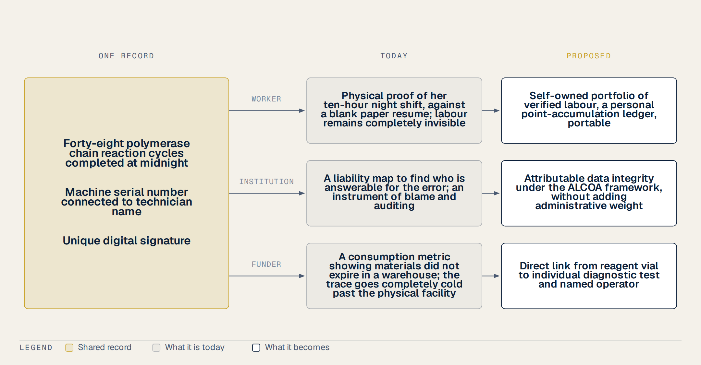
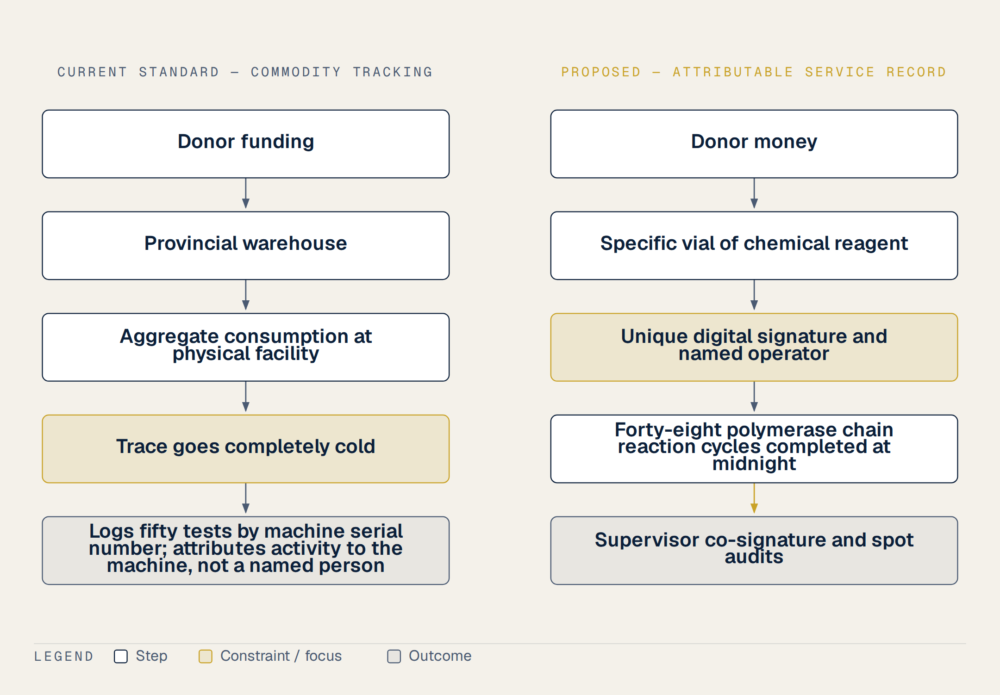

3 Three Readers, One Record
At three o’clock on a rainy Tuesday afternoon, three people are looking at the exact same line of data on their screens. In our provincial laboratory in Vietnam, a technician named Vy stares at a row of text showing forty-eight polymerase chain reaction cycles completed at midnight. For her, this line is her only shield, the physical proof of her ten-hour night shift. Down the hall, her supervisor looks at the same line because a query about a contaminated batch just arrived. For him, this row of text is a liability map, a way to find who is answerable for the error. Thousands of miles away in an air-conditioned office, a program officer opens a database. He has never seen our cramped room, but he paid for the reagents. For him, this line is a consumption metric, proof that the materials did not expire in a warehouse. All three are reading the same entry at the same moment. Yet, they see three entirely different realities.
Our data served the institution, the funder and the auditor. It did not serve the person who produced it, and nobody designed it that way on purpose. Modern laboratory informatics has built sophisticated tracking systems that view attribution purely as an instrument of blame and auditing. In Vietnam, thirty-eight laboratories have implemented open-source LIMS with US CDC support. However, these systems are managed provincially and lack individual, machine-enforced audit trails. When something goes wrong, we search the logs to find who to punish. When something goes right, the technician’s labor remains completely invisible.
Our proposal is to turn this shared line of data into a voluntary point-accumulation asset owned by the worker. Rather than using it as a top-down surveillance tool, the technician can export her own verified contributions as a portable professional credential. This shift from surveillance to self-owned progress is supported by strong behavioral science. Meta-analyses on Perceived Organizational Support show that development opportunities are among the strongest drivers of employee commitment.
It is necessary to design this registry carefully to avoid the traps of gamification. For instance, studies on status tiers show that demoting an individual damages loyalty, so our system will never demote a user. We also reject daily streaks and point expiration, which behavioral literature shows can lead to data gaming or burnout. Instead, we rely on established concepts like endowed progress, where providing an initial, justified jumpstart on a progress record has been shown to increase completion rates from nineteen to thirty-four percent in field experiments.
However, we must remain completely honest about our limits. While behavioral mechanisms like endowed progress and goal gradients are well-documented in marketing studies, their application to healthcare is mostly untested. There is currently absolutely no trial evidence or randomized controlled studies evaluating how a worker-owned, point-accumulation registry affects reporting accuracy or staff retention in low-resource public health laboratories. We are proposing a logical, evidence-informed pilot of twelve months to test these ideas. By connecting the machine’s serial number to a technician’s name, we can satisfy the supervisor’s need for accountability, the funder’s need for tracking, and the worker’s need for visible, portable credit.
Many digital systems and data initiatives come and go. Most of them arrived with a great deal of noise, only to end up abandoned. They died because of a fundamental flaw in their architecture. They were built for only one party. In the world of public health, if you design a system that serves only a single group, you are writing its death sentence.
Most of the tools we were forced to use were built entirely for the funder. The international donors or the high-level administrators wanted clean reports and compliance metrics. Because the system was designed only for their eyes, we on the laboratory floor felt policed and monitored. We saw the software as an intrusive eye that tracked our minutes without offering us any value. When staff feel watched, they naturally resist. They find ways to work around the system, or worse, they begin to fabricate numbers just to make the charts look green. The data becomes a performance, and the system dies of its own falsehood.
Conversely, you can try to build a system solely for the worker. You can design an app that helps us track our daily tasks or manage our own professional learning. But if the system serves only the worker, it hits a different wall. Nobody wants to pay to run it. Government agencies and international donors will not fund a platform that does not provide them with verified, actionable data. Without their financial support, the technology cannot survive, and the project quickly collapses once the initial enthusiasm fades.
The proposal does not choose between those readers. It rests on one observation: the same record can serve all three of them at once.
For the worker, the record is a self-owned portfolio of verified labor. It is their personal point-accumulation ledger that they can carry with them to unlock professional opportunities, like scholarships. For the funder, this very same record is trusted, tamper-evident proof of activity. They can see that the tests were actually run, satisfying their need for accountability without forcing us to feel policed. For the third reader, the educational partner or licensing body, the record is a credible proof of competence. They can instantly verify that a worker has met the required clinical standards without waiting weeks for manual verification.

We should be entirely honest about the limits of this design. A tamper-proof log of fabricated entries is still just a tamper-proof lie. Technology alone cannot prevent a technician from entering false data at the start. However, by aligning the interests of all three readers into one shared record, we remove the main incentive to cheat. We transform a tool of surveillance into a mutual asset.
Our staff struggle under a system that made their daily labor completely invisible. When we write logs or enter data, we are creating records that could serve multiple purposes. Yet, most systems fail because they are built to be read by only one party. In this proposal, I want to describe a system that is designed for two distinct readers at the same time, using the exact same digital record.
The first reader of this record is the worker. Today, if a technician spends five years running thousands of PCR tests in a provincial lab, they leave with nothing but a blank paper resume. They have no portable proof of their work. I am proposing a self-owned digital portfolio that is a permanent, verified record of their actual labour. It is a record that says, for example, I performed four thousand two hundred verified diagnostic tests over these specific years under a unique digital signature. This is not a symbolic badge or a superficial points system. It is a portable professional asset. It belongs entirely to the worker, and they can carry it with them when they move between different employers or apply for advanced training.
The second reader of this record is the institution. In our current provincial labs, there is often deep confusion about who did what on any given day. To solve this, our proposal borrows the strict data integrity standards of the international pharmaceutical industry, specifically the ALCOA framework. In these standards, the very first letter stands for Attributable. This means a record must show exactly who performed a test and when they did it, mapped against a unique digital identity. When an institution reads our proposed database, they gain absolute clarity about individual responsibility. They can see exactly who processed each tube, who ran each assay, and who verified the results.
However, we must be completely honest about the limits of this design and preserve some important caveats. The ALCOA standard was originally created for highly regulated pharmaceutical manufacturing and clinical trial laboratories. None of these regulations were written for a provincial preventive medicine laboratory in Vietnam. Applying them here is a deliberate borrowing of high-status industry practices, not a legal requirement. Furthermore, in the existing industry frameworks, attribution is treated almost entirely as a mechanism of blame and auditing. It is designed to find out who to blame when a record is wrong or when a test fails. Shared logins are a classic inspection finding because they destroy this accountability. The breakthrough of our design is that we do not use attribution to police or blame our staff. Instead, we transform this institutional record of responsibility into a positive, portable professional credit owned by the worker. We make the same record serve both the technician and the institution without adding administrative weight.
In those years, I handled thousands of diagnostic test kits bought with international donor money. I saw how much effort went into tracking these resources. Yet, as I write this proposal, I must point out a massive gap in how we account for these materials. This brings us to the third reader of our proposed record: the funder. Under our design, the donor finally gains the ability to see exactly when a reagent bought with its money was used, by whom it was used, and for what specific test.
To understand why this is a breakthrough, we must look at how donor commodities are tracked today. The global health system relies on major supply chain programmes and software platforms like OpenLMIS. These systems are supported by organizations like Gavi and the Global Fund. But if you look closely at these tools, they only trace commodities as far as the physical facility. They show that a box of reagents arrived at a provincial warehouse or was delivered to a specific clinic. After that, the trace goes completely cold. The systems can only record aggregate consumption. They cannot link a specific vial of chemical reagent to an individual diagnostic test. They cannot tell you which named operator actually ran the test, or on which day, or for which patient. (1,2)
Some people argue that modern instrument connectivity solves this problem. Many laboratories use middleware to connect high-throughput machines, such as viral load analyzers, directly to database systems. But this connectivity does not solve the human accountability gap. It attributes activity to a physical machine rather than a named person. The system logs that the analyzer ran fifty tests, but it does not tell you who prepared the samples, who calibrated the instrument, or who was responsible for the run.

It is worth being exact about what exists today and what does not. There is currently no open-source laboratory information management system in low and middle-income countries that features cryptographic immutability by default. No international donor currently requires tracing chemical reagents down to individual operators. Implementing this level of traceability is our own deliberate design choice, not a legal mandate or a donor requirement. Furthermore, we must state a hard truth. A tamper-proof log of fabricated entries is still just a tamper-proof lie. If a laboratory technician enters false data at the start, cryptography cannot prevent that dishonesty. We must still rely on spot-audits and supervisor co-signatures to verify the input.
By closing this gap, we transform how donors view their investments. Instead of just seeing shipments arrive at a building, they see their funding actively turn into verified human labor on the laboratory floor.
Much hard work goes completely unrecorded. In this proposal, I want to address the most significant gap in our entire global health data architecture. When you look at how laboratory data is managed today, every single existing framework treats attribution as a mechanism for blame and auditing. In these regulatory structures, knowing who performed an action is only useful when something goes wrong. If a data entry is incorrect, or if an assay fails, the system is used to identify the person responsible. It is a tool for policing and finding fault. Shared logins are treated as major inspection findings because they break this chain of blame. Yet, this focus on fault-finding wastes something.
Currently, no regulator, no laboratory information system, no logistics platform, and no international donor has turned this very same record into positive, portable credit owned by the person who performed the work. If a technician runs four thousand tests over three years with absolute precision, that achievement is completely lost to history. The system logs their name for auditing, but they leave their job with a blank paper resume. There is absolutely no established standard for exporting a verified service history as a professional asset. Under the current system, a worker’s hard labor is treated as an institutional commodity rather than their own professional property. We have built elaborate, expensive structures to trace reagents and monitor machinery, but we have completely failed to build a mechanism that allows workers to own the proof of their own competence.
It is worth being plain about the existing tools and their limitations. Some administrative platforms, such as iHRIS or the Workload Indicators of Staffing Need tool, are designed to track staffing numbers, training levels, and overall workload estimates. However, these systems remain completely disconnected from actual daily laboratory logs. Other modern security frameworks, such as blockchain protocols for auditing electronic health records, are designed to log who accessed or edited files. Yet, their focus is entirely on data security and detecting abuse. They were never intended to record positive professional achievements or provide portable career credits. Furthermore, we must acknowledge a vital caveat. No open-source laboratory database in low and middle-income countries currently features cryptographic immutability by default, and no international donor requires tracing work down to individual operators. Implementing this in our local clinics is a choice, not a legal requirement. By transforming the institutional audit trail into a verified service record, we can allow workers to own their professional history. This turns a tool of surveillance into a ladder of opportunity, helping the unconnected prove their worth.
When we talk about global health, we often speak in terms of charity or moral obligation. But in this proposal, There is a version of this argument addressed to funders, and I will put it plainly rather than at length. Programmes that support laboratory capacity abroad do so on the reasoning that detection is cheaper and earlier at the source. That reasoning depends on the people at the source still being there next year.
This is the honest reading of what our proposed system is and what it is not. I must state a vital caveat from the outset. This recognition pathway is not an early warning system itself. It will not automatically detect a new pathogen or trigger an emergency alert. Instead, it is the quiet machinery that keeps the workforce operating the early warning system from falling apart. By transforming invisible daily sweat into a verified professional asset, we ensure that trained technicians stay in their jobs longer and produce more timely, reliable diagnostic data. We are securing the human foundation of health security. Without stable, motivated people on the laboratory floor, even the most expensive surveillance machinery is useless.
The cost of failing to stop health threats at their source is staggering. To understand the scale of this risk, we can look at the economic impact of the last major global crisis. According to a 2020 paper by Cutler and Summers published in the Journal of the American Medical Association, COVID-19 cost the United States roughly 16 trillion dollars. This is an almost unimaginable sum of money. However, we must preserve the strict honesty caveats attached to this figure. First, the text notes that about half of that 16 trillion dollar estimate represents non-market health loss, such as the value of lost lives and mental health impacts, rather than direct lost economic output. Second, we must acknowledge that this paper is a short viewpoint article rather than a peer-reviewed, complex economic modeling study. It is a simplified estimate, not a definitive final calculation (3,4).
Yet, even with these necessary caveats, the message is undeniable. The economic and human cost of a delayed response dwarfs any local investment in public health systems. When a provincial laboratory in a place like Vietnam cannot retain its staff, the delay in detecting a novel threat can ripple across oceans in days. By investing in a digital pathway that verifies and honors the work of frontline technicians, the United States keeps the people who operate that capacity in place. Equipment is the part that gets counted. The person who runs it at two in the morning is the part that walks away, and replacing her costs more than keeping her.
During that time, I watched valuable investments quietly decay. When we talk about global health security, we often look at the staggering scale of the financial numbers involved. If we look at the cost of global pandemic preparedness, the figures presented by major international health bodies are massive. The G20 High Level Independent Panel, in its July 2021 report, estimated that global pandemic preparedness requires roughly 15 billion dollars a year in additional international funding. Just a few months later, in March 2022, the World Health Organization and the World Bank presented a report to the G20 estimating the total preparedness need at 31.1 billion dollars a year, with 10.5 billion of that representing additional international funding. On these numbers, the record deserves a plain statement. They are not bottom-up cost calculations with precise confidence intervals. Instead, they are expert consensus estimates designed primarily for policy advocacy (3–5).
Some advocates attempt to justify these massive investments by quoting dramatic return-on-investment multiples, but these two numbers differ by orders of magnitude. In this proposal, I deliberately refuse to quote any specific return multiple. I do this because those multiples are simple ratios rather than counterfactual models. They do not survive strict economic scrutiny and fail to account for complex real-world variables.
However, the core of my argument does not rely on these grand global estimates. There is a deep cost asymmetry at play here. While the world debates tens of billions of dollars, the local reality on the laboratory floor is far more modest. This proposal does not ask for a single dollar of new, unallocated money. It does not ask for a new budget line from any donor or ministry. Instead, the real argument is that this proposal asks that what has already been invested does not decay (3,4).
In Vietnam, the marginal dollar should not be used to build new facilities or buy more high-throughput machinery. We already have a preventive health network that reaches all sixty-three provinces and extends down to the commune level. The legal rails are already in place through Circular Thirty-Two, which mandates continuous medical education hours. Even the US CDC has already invested in deploying open-source laboratory information systems across thirty-eight local laboratories. They have also supported quality management systems to help ten laboratories achieve ISO accreditation. The infrastructure is there, but without a stable, motivated workforce, it is slowly falling apart as trained technicians leave for the private sector. This proposal is incredibly cheap because it does not require us to construct something from nothing. It merely asks to connect the existing pieces that are already paid for, so that earlier investments keep working. It is a small, controlled option on a massive potential payoff.
During those years of processing diagnostic samples, I often thought about where these threats actually originate. In this proposal, I want to write about where new diseases actually come from, and I want to do so carefully, without pointing fingers or placing blame on local cultures. When a new virus emerges, it is not a moral failing of a specific community. The real scientific drivers of emerging infectious diseases are ecological and physical. They are driven by rapid land use change, rising livestock density, and the expanding human-animal interface.
The data on this is very clear. In a landmark 2008 study published in Nature, Kate Jones and her colleagues analyzed three hundred and thirty-five emerging infectious disease events. They found that sixty point three percent of these emerging infectious disease events are zoonotic, meaning they jump from animals to humans. Furthermore, seventy-one point eight percent of those zoonotic events originate specifically in wildlife. A later study in 2017 by Allen mapped these hotspots globally. His team showed that these hotspots are heavily correlated with land use change, mammal diversity, and human population density. Southeast Asia, including Vietnam, frequently appears on these maps. This is not because of cultural habits or local eating practices. It is because our region has a high diversity of mammals, particularly bats, combined with rapid forest fragmentation and dense human and livestock populations (6–8).
But we must look at the structural forces behind these ecological pressures. It is necessary to be honest about the fact that forest fragmentation and agricultural expansion in developing nations are substantially driven by global economic demand for commodities. Additionally, we must state a critical scientific caveat regarding these hotspot maps. Hotspot maps are partly an artifact of surveillance effort. Countries that spend more money looking for viruses and reporting them will naturally show up as hotspots, whereas regions with minimal surveillance remain blank. The map reflects where we look, not just where the viruses are.
This is why Vietnam’s position matters. We are a frontline partner and a gatekeeper in global health security. We stand at the precise interface where these ecological pressures collide. However, I must be clear that our proposed recognition system is not an early warning system itself. It will not automatically detect new pathogens or trigger alerts. Instead, it is the quiet machinery that keeps the workforce operating the early warning system from falling apart. It ensures that trained technicians stay in their jobs longer and produce more timely, reliable diagnostic data. The marginal dollar spent here by international partners should not be used for building new clinics or buying redundant equipment. We do not need more concrete. Instead, the marginal dollar must be spent on activating what already exists, connecting the legal rails and local infrastructure we have already paid for.
The usual story about institutional capacity says that Germany and Japan recovered after the war because their institutions survived while their factories burned. Economic historians do not accept that account. German industrial capital stock in 1948 was above its 1936 level; the bottlenecks were transport, coal and currency. The Marshall Plan moved money worth about two and a half percent of recipient national income and worked mainly through the conditions attached to it. I raise this only because the same story gets used to argue that money should go where capacity already exists (9,10).
We must state plainly that the famous aid effectiveness claim, which argues that money only converts into progress where strong capacity and good policy already exist, has been overturned. The original finding by Burnside and Dollar failed to hold when other researchers, such as Easterly, Levine, and Roodman, replicated it with expanded datasets in 2004, proving the interaction did not survive. In the health sector specifically, the evidence actually runs the other way. A systematic study of Global Fund disbursements by Lu and colleagues, published in The Lancet in 2006, showed that low-income countries with less developed health systems actually achieved higher grant implementation rates than wealthier, more developed systems. Political stability was the real predictor of disbursement, not health system development. The authors concluded directly that absorptive capacity is not a valid reason to withhold funds from the poorest nations (11–13).
Therefore, institutional capacity does not determine whether money should flow. It determines the channel through which money works. In Vietnam, our marginal dollar does not need to build new capacity from scratch. We do not need a massive, expensive overhaul. The preventive medicine network is already established across sixty-three provinces down to the communes, Circular thirty-two already provides our legal continuing medical education rails, and the US CDC has already placed open-source laboratory information management systems in thirty-eight labs. Our proposal is incredibly cheap because it does not demand new capacity. It simply connects what already exists.
In writing this proposal, I want to discuss the official rationale of global health security and the honest limits of the statistics we use to support it. The overarching framework of our field is organized around the Global Health Security Agenda, which has used the prevent, detect, and respond triad since 2014. The United States published a Global Health Security Strategy in April 2024 that reinforced this framing. That strategy has since been withdrawn and was replaced in September 2025 by the America First Global Health Strategy, which moves toward bilateral multi-year agreements aimed at transitioning recipient countries to self-reliance. I mention the change because a proposal that cites a withdrawn strategy as current policy deserves to be read with suspicion, and because the newer framing makes the argument here easier rather than harder: a record that stays with the worker is exactly what survives a transition to self-reliance. Officially, the United States CDC’s Division of Global Health Protection reports an impressive role in supporting the containment of over two hundred and fifty outbreaks in the year 2024 alone. This is the grand narrative that justifies international intervention. (14–16)
However, when we look at the specific performance targets on the ground, the numbers become much more normative than experimental. Consider the widely cited seven-one-seven target, which calls for detecting an outbreak within seven days, notifying public health authorities within one day, and completing an early response within seven days. This formula is useful, but we must state clearly that it is a normative target chosen for memorability rather than a precise threshold derived from scientific experiments. When we examine actual implementation data published in 2023 across forty-one health events in countries like Brazil, Ethiopia, Liberia, Nigeria, and Uganda, the reality is sobering. While fifty-four percent of events met the detection target and seventy-one percent met the notification target, only forty-nine percent met the early response target. In fact, only about twenty-seven percent, or roughly a quarter of all assessed events, met all three targets. (5,16)
The same pattern shows in those financing estimates I quoted earlier. They are expert consensus shaped by policy advocacy, not bottom-up costings with confidence intervals around them. That does not make them worthless; it makes them political indicators rather than blueprints, and a proposal that leans on them should say which of the two it is relying on. (3–5)
Our proposal is not trying to resolve these global macroeconomic debates. We are proposing a highly contained, local pilot of a verified service record for our technicians. By running a single staff position on our existing legal continuing medical education rails, we can test these behavioral models cheaply. If we want to achieve targets like seven-one-seven, we must first make the daily, invisible labor of our local laboratory technicians visible.